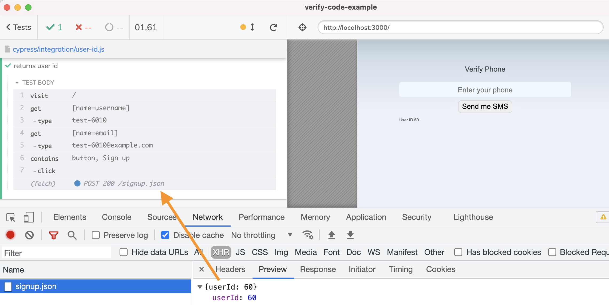
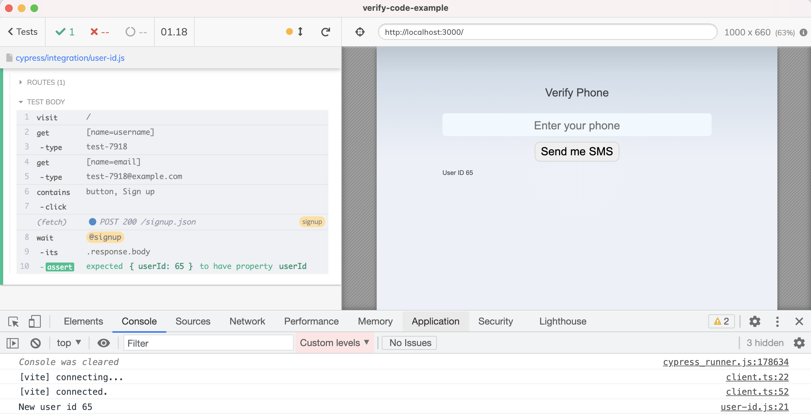
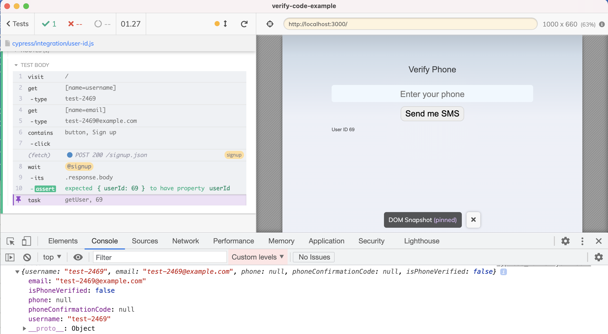
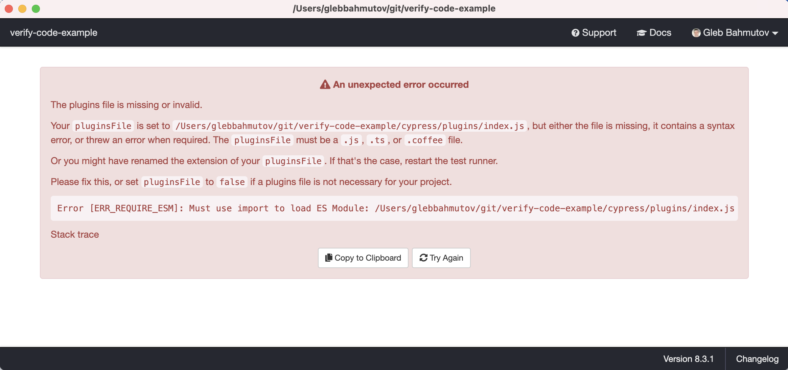
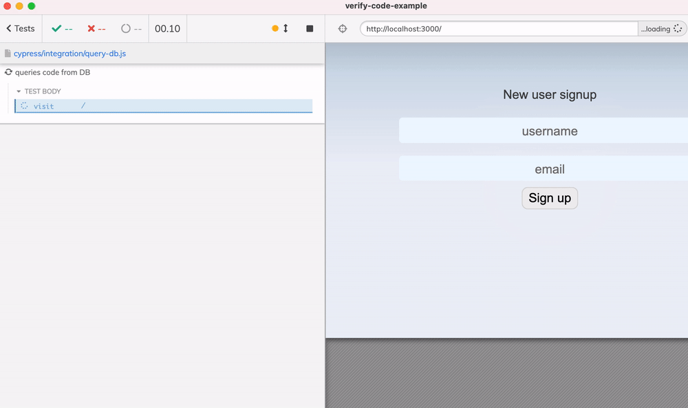

Let's continue looking at a web application that makes the users sign up using a phone number. We have covered the test phone prefix in the previous blog post How To Verify Phone Number During Tests Part 1. In this blog post, I intend to show how the test runner can directly access the MySQL database to look up the user's record, rather than relying on the application's API to expose it.
🎁 You can find the full source code in the repo bahmutov/verify-code-example.
The application
To install all NPM dependencies to run the application we execute the command
1 | npm install |
The above command also automatically installs the dependencies in the api subfolder via postinstall script in the package.json file
1 | { |
The database connection is made from the api folder via mysql module as I will show in the later sections.
The user id
When a new user is added to the table, it gets assigned a user id. Later on, if we want to look up the user's record, we need to know this value in the test. We can see the user ID returned by the API call in the DevTools Network tab below

Aside: the app is showing this user id as you can see below the input elements, but that's just to make the demo simpler to understand. Usually the item's ID is not exposed by the UI.
We can grab the returned user ID using the cy.intercept command by spying on the API call that creates the user. Here is the test that prints the returned ID to the console.
1 | /// <reference types="cypress" /> |

Now we need to use this ID to look up the user information in the database.
MySQL database connection
The Cypress test runs in the browser, but we want to connect to the MySQL database, which is only possible from outside the browser. Luckily, Cypress includes the plugin file that runs in its own Node process on the host machine. The plugin process can connect to the database, and communicate the results back to the browser when called using the cy.task command.
Here is our cypress/plugins/index.js file. It will read the database connection information from the process environment variables that Node applications automatically have in the process.env object, see Node API documentation.
Tip: read Working with Environment Variables in Node.js to learn how to work with the environment variables.
1 | // @ts-check |
It looks so much like the regular Node code - because it is. The spec can now call cy.task('getUser', ...) to fetch the user information. We can print the yielded object in the console.

Note: the mysql NPM module is used and installed by the package.json file inside the api folder. Thus our Cypress plugin Node file requires it using the relative path require('../../api/node_modules/mysql').
Gotcha: ES6 modules
By default, the web project uses ES6 modules by setting type: module in its package.json. If we simply try to load the Cypress plugin file, it fails:

To solve this, I added a dummy package.json to the cypress subfolder. This file points back at the CommonJS resolution when Cypress loads its own files.
1 | { |
Gotcha: Native database driver code
Sometimes when loading a database module, Cypress might need to load the native code. Since you might install dependencies using one version of Node (let's say Node 10), while Cypress comes with its own built-in Node used by default to load the plugin file, the native code install is incompatible. You can check the Node version bundled with Cypress using the cypress version command:
1 | $ npx cypress version |
Here is the tip if the native database driver does not load: tell Cypress to use the system Node version by using the cypress.json file.
1 | { |
Re-using the API code
The above plugin file code looks very much like the API code used to access the database. I suggest re-using part of the production code to create the database connection from the plugin file.
1 | // @ts-check |
Even better is to move the SQL query into the production code - it might be useful there, and just call the API code from the plugin file. Let's put the DB access into the api/src/db.user.js next to the other database queries.
1 | // @ts-check |
From the Cypress plugin file, simply call the exported asynchronous function.
1 | // @ts-check |
Beautiful.
Looking up the phone verification code
Finally, if we can look up the user info via cy.task + DB query, we do not need to use much of the special test phone code we wrote before. We can still prevent the SMS send for the phones that start with the test prefix. But now we can use randomly generated codes for such numbers too!
1 | let sendSms = true; |
After creating the user, we can look the code by querying the MySQL database using the task. Here is the complete test.
1 | /// <reference types="cypress" /> |

Nice!
Final thoughts
I think the best practices for accessing the database from Cypress tests are:
- try avoiding the code duplication by re-using as much of the existing production code as possible
- limit the number of shortcuts taken via DB lookups or modifications; use them to bypass 3rd party services that cannot be automated otherwise (like receiving an SMS message).